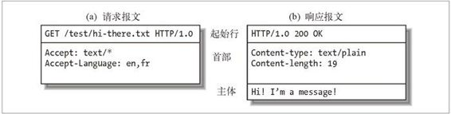
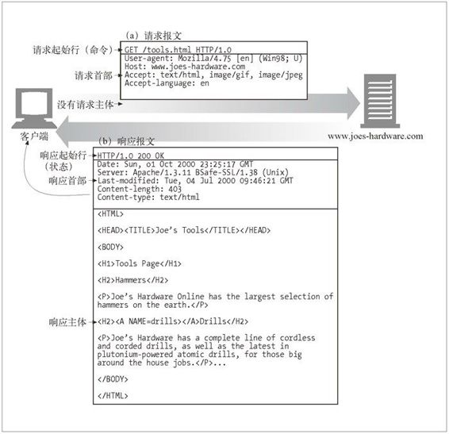

1.5 报文
现在我们来快速浏览一下 HTTP 请求和响应报文的结构。第 3 章会深入研究 HTTP 报文。
HTTP 报文是由一行一行的简单字符串组成的。HTTP 报文都是纯文本，不是二进制代码，所以人们可以很方便地对其进行读写 1。图 1-7 显示了一个简单事务所使用的 HTTP 报文。
1 有些程序员会抱怨 HTTP 的语法解析太困难了，这项工作需要很多技巧，而且很容易出错，尤其是在设计高速软件的时候更是如此。二进制格式或更严格的文本格式可能更容易处理，但大多数 HTTP 程序员都很欣赏 HTTP 的可扩展性以及可调试性。

图 1-7 由一行行的简单文本结构组成的 HTTP 报文
从 Web 客户端发往 Web 服务器的 HTTP 报文称为请求报文（request message）。从服务器发往客户端的报文称为响应报文（response message），此外没有其他类型的 HTTP 报文。HTTP 请求和响应报文的格式很类似。
HTTP 报文包括以下三个部分。
起始行
报文的第一行就是起始行，在请求报文中用来说明要做些什么，在响应报文中说明出现了什么情况。
首部字段
起始行后面有零个或多个首部字段。每个首部字段都包含一个名字和一个值，为了便于解析，两者之间用冒号（:）来分隔。首部以一个空行结束。添加一个首部字段和添加新行一样简单。
主体
空行之后就是可选的报文主体了，其中包含了所有类型的数据。请求主体中包括了要发送给 Web 服务器的数据；响应主体中装载了要返回给客户端的数据。起始行和首部都是文本形式且都是结构化的，而主体则不同，主体中可以包含任意的二进制数据（比如图片、视频、音轨、软件程序）。当然，主体中也可以包含文本。
简单的报文实例
图 1-8 显示了可能会作为某个简单事务的一部分发送的 HTTP 报文。浏览器请求资源 http://www.joes-hardware.com/tools.html。

图 1-8 http://www.joes-hardware.com/tools.html的 GET 事务实例
在图 1-8 中，浏览器发送了一条 HTTP 请求报文。这条请求的起始行中有一个 GET 命令，且本地资源为 /tools.html。这条请求说明它使用的是 1.0 版的 HTTP 协议。请求报文没有主体，因为从服务器上 GET 一个简单的文档不需要请求数据。
服务器会回送一条 HTTP 响应报文。这条响应中包含了 HTTP 的版本号（HTTP/1.0）、一个成功状态码（200）、一个描述性的原因短语（OK），以及一块响应首部字段，在所有这些内容之后跟着包含了所请求文档的响应主体。Content-Length 首部说明了响应主体的长度，Content-Type 首部说明了文档的 MIME 类型。